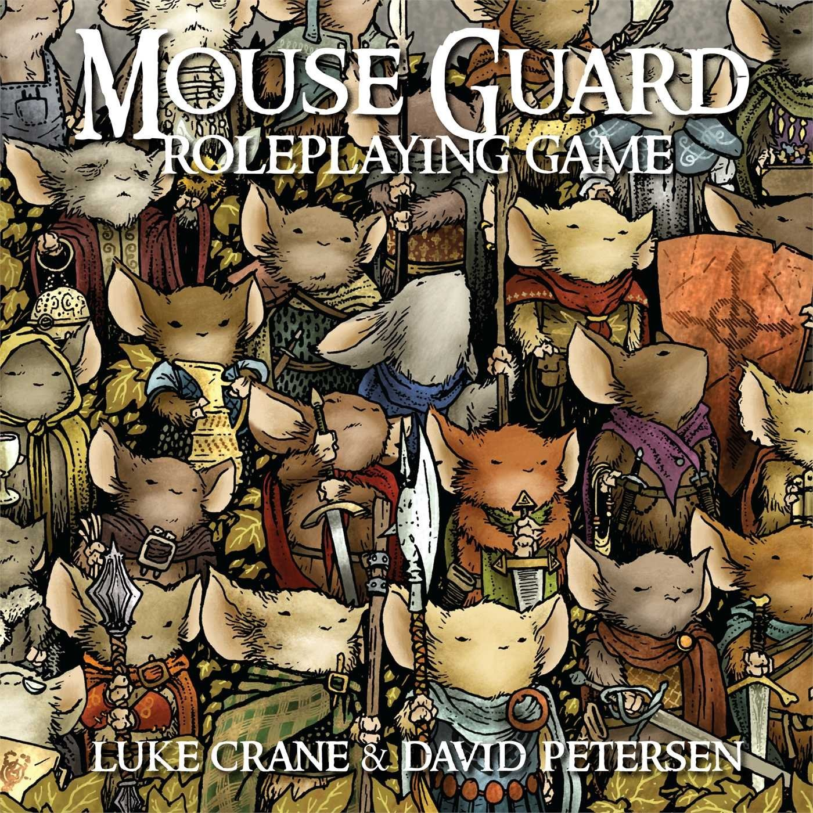

Mouse Guard
Luke Crane & David Petersen

Mouse Guard is unusual in both setting and structure. Based on graphic novels by David Petersen, the game focuses a pseudo-feudal order of intelligent mice going on perilous missions.